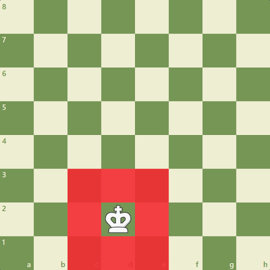
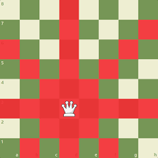
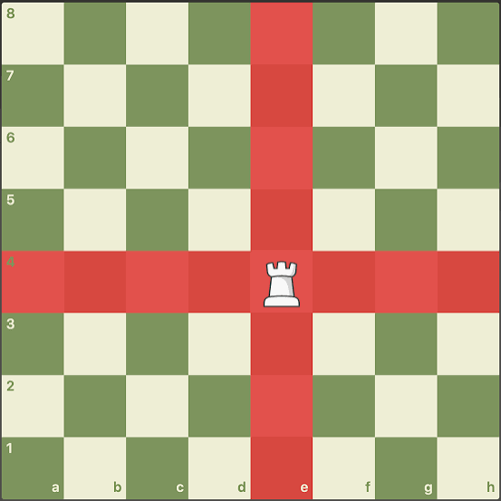
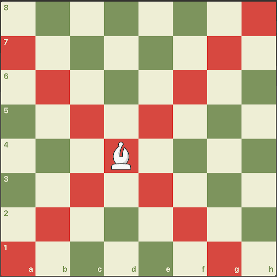
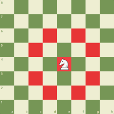

How to play c

ess
How to play c
ess
Chess looks complicated, but it doesn't have to be. This guide strips away the confusion to show you exactly how the pieces move, how to protect your king, and how to plan your first win. Your journey from a pawn to a grandmaster starts here.

The Pawn is worth 1 point and moves forward one square at a time (or two squares on its first move). It captures diagonally forward one square. If a pawn reaches the opposite side of the board, it undergoes Promotion and transforms into any piece you choose, usually a Queen.

The King is priceless because losing it means the game is over. It moves exactly one square in any direction. Once per game, it can perform a special safety move called Castling with a Rook. If the King is trapped and cannot escape, it is Checkmate.

The Queen is the most powerful piece on the board and is worth 9 points. She can move any number of open squares in any direction (straight, sideways, or diagonally). Because she is so valuable, you must protect her from early enemy attacks.

The Rook is worth 5 points and moves in straight lines horizontally or vertically across any number of open squares. Rooks are heavy artillery pieces that become exceptionally powerful in the endgame once the board clears up, allowing them to control open paths.

The Bishop is worth 3 points and moves diagonally across any number of open squares. You begin the game with two Bishops—one locked entirely to light squares and the other to dark squares. They perform best at long range across an open board.

The Knight is worth 3 points and moves in a unique "L" shape (two squares in one direction, then one square to the side). It possesses a special ability: it is the only piece on the chess board that can jump over other pieces, making it lethal in crowded spaces.
Chess is played on an eight-by-eight grid of alternating light and dark squares, positioned so a light square sits on each player's bottom-right corner. The player with the white pieces always moves first, and players alternate turns moving one piece at a time. Passing a turn is illegal; you must make a legal move when it is your turn, even if it hurts your position.
When a piece directly threatens to capture the enemy King on the next turn, the King is in Check. The defending player must immediately get their King out of danger. There are only three ways to escape check: moving the King to a safe square, blocking the attack with another piece, or capturing the attacking piece.
The ultimate goal of chess is to trap the enemy leader. When a King is placed in check and has absolutely no legal moves to run away, block the threat, or eliminate the attacker, the situation is called Checkmate. The moment checkmate happens, the game ends instantly, and the attacking player wins.
Not every game ends with a victory; many matches end in a tie, known as a Draw. A draw occurs if both players agree to it, if there aren't enough pieces left to force a checkmate, or during a Stalemate. A stalemate happens when a player has no legal moves left on the board, but their King is not currently in check.
For how to play checkers click the link below.
How To Play Checkers